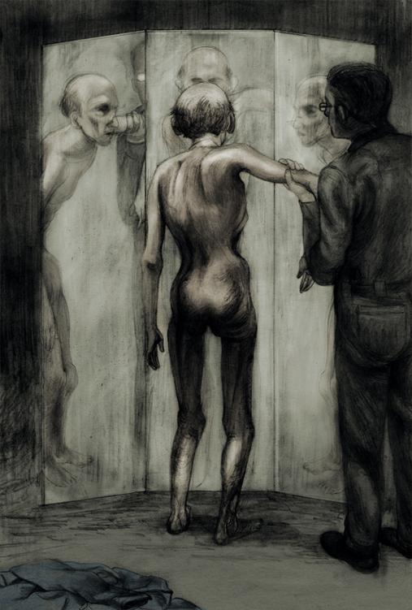

三
“你的改造过程，分为三阶段，”奥布赖恩说，“那就是学习、了解和接受。你现在进入第二阶段。”
温斯顿像在第一阶段时一样，仰卧在床，但缚着他的带子比以前松弛些。除了脚可以略微移动外，他还可转头四边张望，手肘也可举起来。控制盘也没以前那么恐怖了。如果他思想敏捷些，还可以躲过它的袭击，因为奥布赖恩只有在他愚不可及时才动用控制盘。有时历时一节奥布赖恩也没有使出杀手锏。他不知道一共有多少节，总之全部过程好像无休无止就是。可能是几个星期吧。有时从一节到另一节要等几天，但有时仅是一两个钟头。
“你躺在这里，”奥布赖恩说，“一定觉得奇怪：为什么仁爱部要在你身上花这么多时间？我记得你还自由的时候也为同样的问题困惑过。即使我们释放了你以后，你还是解答不了这个疑团的。你可以了解到你所处社会的运行程序，但你不会知道其基本的动机。你在日记上不是写过吗：‘我知道怎样去做，却不明白为什么要做。’你一想到‘为什么’时，就会怀疑自己的神经是否正常。你看过那本书，戈斯坦的书；即使没看完，也看了一部分。这书有没有告诉你一些你从前不知道的事？”
“你看过了？”温斯顿问。
“书是我写的，或者说是我跟别人合作写的。你该知道，没有人可以单独写出一本书来。”
“那书上讲的是不是真的？”
“就其所描述的部分而言，可说是真的。但它所谈到的计划，都是废话。什么秘密地积聚知识，逐渐开导民智，最后促成老百姓造反，推翻党的领导等等——书不用看完，你也可以预想到这就是它要说的结论了。我告诉你，这都是鬼话。无产阶级永远不会造反！一千年一万年也不会。因为他们不能造反。我相信不用告诉你此中道理，你自己已知道。因此，如果你抱过什么平民起义的幻想，从此可以死心了。党是推不倒的，党的领导是千年万代的。你的思想应以此为出发点。”
他走近温斯顿的床前，又重复一次说：“党的领导是千年万代的！好，我们现在回到‘怎样’与‘为什么’的问题。党怎样维持它的权力，你了解得很清楚。现在你告诉我，为什么我们抓着权力不放？我们的动机是什么？我们为什么要权力？说吧！”他看到温斯顿没有说话，催促他说。
温斯顿还是没做声，他的精神已疲倦不堪。相反地，奥布赖恩却越说越起劲，那种疯子特有的狂热又流露在他脸上。他猜得到奥布赖恩要说的话：党不是为了本身的利益而追求权力；党要权力，乃是为了群众的好处。群众是软弱的、无能的动物，既不能面对真理，又不会珍惜自由，因此必须受人统治，受比他们强的人欺骗。人类只有两个选择：一是自由，二是幸福。对大多数人来讲，幸福比自由重要。党是弱者的永远监护人，牺牲自己的幸福成全他人，背负做坏事的名声，为的就是日后给大家带来好日子。最可怕的是，温斯顿想，最可怕的是奥布赖恩要是对他说这种话，他自己一定也会相信。你从他的脸上就可看出来。奥布赖恩什么都知道。他比温斯顿知道得更清楚，世界的真实情况是怎么样的，老百姓过的是哪种非人的生活，而党又用什么手段与谎言去统治他们。奥布赖恩了解这些问题，也衡量了这些问题，觉得这不是什么大不了的事，因为既求目标，就不择手段了。你面对一个比你聪明的疯子，又有什么办法呢？温斯顿想。这疯子礼貌地听过你的申辩后，又继续坚持他的疯狂信仰。
“党是为了我们的好处才统治我们，”他软弱地说，“党相信人类无能管理自己，所以——”
他说不到一半，就几乎大叫起来。他浑身刺痛。奥布赖恩把控制盘的指针调到三十五。
“那是笨得不可以再笨的话，温斯顿！”奥布赖恩说，“你怎可以说这些蠢话？”
他把把手拉回到零位，接着说：
“现在我只好告诉你答案。你听着，党追求权力，完全是为了权力本身。我们对别人的利益一点也不感兴趣，我们只对权力感兴趣。财富、物质享受、长生不老或幸福的生活，一点不吸引我们——除了权力，赤裸裸的权力。什么是赤裸裸的权力，等下你就会知道。我们跟以前寡头政权不同的地方，就是我们知道我们所做的是什么。其余的人，就算他们跟我们有相像的地方，相较起来都是懦夫和伪君子。德国的纳粹党和俄国的共产党在方法上跟我们很接近，但从没有勇气承认他们的动机。他们假装——说不定他们自己也相信——他们是为了不得已的理由才夺权的，为时不会太久，因为只要他们执政不久，人间就会出现一个自由平等的天堂。我们跟他们不一样。我们深信，没有人会夺了权后自动放弃的。权力是目的，不是手段。没有人会为了捍卫革命而去成立独裁政权，革命的目标就是为了成立独裁政权。迫害的目的就是为了迫害。苦刑的目的就是为了苦刑。权力的目的就是为了权力。你现在开始懂我的意思了？”
温斯顿又一次为奥布赖恩疲劳憔悴的面容吸引住了。粗看来，它的特征没有什么改变，仍是那么坚强、粗豪、残忍，充满了智慧。你还可以看出他为了控制心中那股激情所作的努力。但他确是累了，眼底起褶，颊上皮肤松弛。奥布赖恩俯下身，故意让他看清楚自己憔悴的脸。
“你一定在想着——”他说，“这家伙的脸又老又憔悴，一天到晚讲权力，却无法阻止自己身体的衰老。你有没有想到，温斯顿，个人只是一个细胞？细胞的衰老正是有机体健康的明证。你把指甲剪去，人却死不了，对不对？”
说完后他又离开了温斯顿，一只手插在口袋里，踱着方步。
“我们是权力的祭司，上帝是权力。”他说，“目前对你来讲，权力只是个名词，因此你也该了解权力的真正意义是什么了。首先，你要知道权力是集体的。除非个人认同集体的意志，否则他就没有权力。党的口号你是知道的：自由是奴役。你有没有想过，这口号可以倒过来？奴役是自由！只手空拳的话，一个自由自在的人终被打败。这是改变不了的事实，因为人注定要死。这也是人类最大的挫折。可是如果他愿意与党合成一个整体，换句话说，放弃自己的身份与党完全认同，那么不但他的权力大得无法衡量，而且长生不老。第二件你得认识的事是权力就是控制人类的权力。控制人的身体固然是权力，但最重要的还是控制人的思想。控制事物，或者，如你所说控制外在的现实，并不重要。我们对事物的控制已到了随心所欲的绝对境界。”
温斯顿一下子忘了控制盘的威胁，扭动着身子要坐起来，结果徒劳无功，反弄得浑身疼痛。
“你们怎能控制事物？”他嚷道，“天气冷热，你们管得了？地心吸力的定律，你们打得破？还有疾病、痛苦、死亡——”
奥布赖恩举手制止他说下去。“我们控制了思想，就是控制了事物。什么是现实？还不是景由心生。温斯顿，你慢慢就会懂得的。我们没有什么不能做的事。飞天遁地，无所不能。如果我愿意，我可以把这层楼像肥皂泡一样吹起来。我没有做，因为党不需要做。你干脆把十九世纪的宇宙定律忘了吧，因为我们创造了自己的定律。”
“你们就是不能创造自己的定律！你们还不是这行星的主人！欧亚国和东亚国呢？你们还没征服。”
“那无关紧要。我们哪时高兴，哪时就征服他们。但即使我们按兵不动，那又有什么分别？我们可以把他们摒诸存在之外。大洋邦就是世界。”
“但这世界小如尘埃，而人更渺不足道。人的存在有多久？地球上荒无人迹的日子，有几百万年！”
“胡说，我们多老，地球就有多老。地球又怎可能比我们老呢？有人的意识存在，才有事物的存在。”
“但地球的地层里不是藏有已经绝迹生物的化石吗，如猛犸、柱牙象和巨大的爬行动物？人类那时还没出现呢！”
“你见过这种化石吗，温斯顿？当然没有。化石是十九世纪生物学家发明出来的。在人类出现以前，什么东西都不存在。如果人也有绝种的一天，到时什么东西也不存在。除人以外，再无东西。”
“可是宇宙在我们之外！你看看夜间的星星吧，有些离我们一百万光年，我们一辈子也接触不到。”
“什么是星星？”奥布赖恩漠然地说，“那不过是几公里外的光点。如果我们有需要，当然接触得到，或者干脆把它们抹掉。地球是宇宙中心，太阳和星星绕着地球行走。”
温斯顿又一次痛苦地扭动身体，可是这次他没说话。奥布赖恩好像听到了他无言的抗议似的，接着说：
“当然，为了某些目标，我们说太阳绕着地球运行是不对的。我们的船只在海洋行驶时，或者我们预言日食的时间，为了方便得假定地球绕着太阳走，也得相信星星离我们百万光年。但那又算得了什么？你以为我们不可以使用两种不同的天文学原理吗？看我们的需要而定，星星离我们可远可近。你认为我们的数学家做不来吗？你忘了双重思想的逻辑？”
温斯顿颓然瘫在床上。不管他说什么，结果总被对方一棒打回。但他知道，他心底知道，自己是对的。认为人的意识是唯一衡量现实的标准，这种说法一定有什么办法可以击破的。这种理论，不是老早就证明站不住脚吗？这套学说还有个名字，可惜一下又忘了。奥布赖恩嘴角露出浅浅的笑意，俯下头来看着他。
“温斯顿，我不是老早讲过，哲学不是你的拿手把戏。你要找的词是‘唯我论’。可是你错了，我们的一套不是唯我论。如果你一定要找个名词，或者可以叫‘集体唯我论’吧。但那也不对，事实上正好相反。但我们说得太远了。”他改换了口气说，“我们日夜争取的权力，真正的权力，不在于控制事物，而是控制人。”他顿了顿，然后又用小学老师对可造之材发问的语气问，“温斯顿，一个人要怎样使用权力才能教另一个人乖乖听话？”
温斯顿沉吟了一下，说：“让他受苦。”
“对了，让他受苦。单是顺从还不够。除非一个人身上正受着痛苦，你无法知道他是跟着你的意志走还是我行我素。权力因此是使人痛苦，使人羞辱。权力是把别人的思想拆得片片碎，然后再按自己的模式重组起来。你现在开始了解我们要创造的是什么样子的世界没有？我们创造的世界，正好与旧日冬烘先生想象出来的乌托邦相反。乌托邦是极乐世界，我们的世界则充满了恐惧、背叛、痛苦，你践踏别人也被别人践踏——一个在转变过程中手段会越来越残忍的世界。我们世界中所说的进步就是痛苦的升级。以前的文化老爱自称建立于仁爱与正义的基础上，我们的则建于仇恨之上。在这个世界上，除了恐惧、愤恨、打倒别人的快乐和自羞自辱外，人类再无别的情感。因为我们将会把其余的情感废掉。事实上，我们已把革命前遗留下来的思想习惯改变了。我们割断了父母子女的亲情、人与人之间的道义关系。丈夫不敢信任太太，父母不信任儿女，朋友的定义已不存在。将来连太太与朋友都不需要。孩子一生下来就被党收养，一如我们从母鸡的窝中拿鸡蛋一样。性本能将被淘汰，繁殖行为是一年一次的公事，就像每年的配给证得重新签发一样。我们将会消除男女在性交时感受到高潮的能力。这方面的工作，我们的神经学家已着手研究。除了对党得要绝对忠诚外，任何人或事都可以出卖。要爱，就爱老大哥。欢笑的声音，只有一个人在看到对手倒下来时才会出现。艺术、文学、科学绝迹人间。我们哪天到了无所不能的地步，也就用不到科学了。美与丑也无分别。好奇心与享受生命的能力也将消失。所有竞争性的快乐也被消灭。但温斯顿，别忘记，永远不会消失的快乐就是对权力的迷恋，而且会越迷越深，越来越微妙。任何时刻你都可以体验到胜利者的刺激感：踩着一个已无还手之力的敌人的刺激感。你如果想知道未来如何，就想象一下皮靴踩踏在一个人脸上的滋味吧。不是踩踏一下就收回来，而是永远踩踏下去。”
奥布赖恩停了下来，好像预料到温斯顿要发问似的。温斯顿真希望能够蜷缩在床，因为他的心好像冻结了。他没说话，奥布赖恩乃继续说下去：
“记住了，永远永远踩踏下去，因为那张脸一直等待着我们的皮靴。异端分子的脸、社会公敌的脸随时出现，也随时被击败、被凌辱。自你落在我们手上后所经历的一切，不但会重演，而且还会变本加厉。侦查犯人的行为、互相出卖、逮捕、苦刑、死刑、失踪——这种事永远不会停止。将来的世界既是恐怖的世界，也是胜利者的世界。党越强大，越不容异己。反对的势力越弱，镇压的手段越强。戈斯坦和他的邪说也会永远存在。每时每刻他们都被我们打败、侮辱、奚落，但他们将与党共存。过去七年来我和你合演的戏，会不断重演，一代一代地演下去，而且演技会越来越高超。异端分子落在我们的手上，经由我们摆布，痛得呼天抢地后垮了，变得无廉耻了，最后悔恨交加，自动爬到我们的跟前来。这就是我们准备迎接的世界，温斯顿，一个捷报频传的世界，一个不断触到权力的神经的世界。我想你已慢慢认识到这个世界的面目，但最后你不但会认识它，而且还会接受它、欢迎它、变为其中一部分。”
温斯顿的精神逐渐恢复，乃微弱地抗议说：“你们不可以！”
“你这话是什么意思，温斯顿？”
“你们不可以创造一个你刚才描述的世界。这仅是梦想，事实上是不可能的。”
“哦，为什么？”
“一种文明不可能建立于恐惧、仇恨和残忍上，因为这不会持久。”
“为什么？”
“因为这样一种文明无活力，最后会瓦解，自取灭亡。”
“鬼话。显然你是认为仇恨比爱更消耗精力，是不是？就算你对，那有什么关系？好，假设我们选择加速生命的速度，结果未老先衰，三十岁不到就变了老人。我来问你，那又有什么分别？你还不懂吗，个人的灭亡不算死亡，党才是不朽的。”
正如他预料的一样，奥布赖恩的逻辑使他毫无反击之力。再说，他真怕跟奥布赖恩再纠缠下去的话，又得受皮肉之苦了。可是，他不能保持缄默。他不想跟奥布赖恩辩论，而除了对他刚才说的话感到难言的恐怖外，他实在再无其他理论根据，但他还是用微弱的声音把话说了。
“我不知道你说的话是否有理，而且，我也不想计较。只是我觉得你们终归要失败的。总有一些事情会击倒你们。生命会战胜你们。”
“我们控制生命，温斯顿，控制生命的每一部分、每一层次。你一定以为有些什么叫人性的东西会受不了我们的控制，最后必然会反对我们。但我们创造人性！人是可以捏造出来的。再不然你又想旧事重提，回到你的无产阶级或奴隶造反理论去。你是白费心思了，温斯顿，他们像野兽一样孤立无援。党就是人类，其余不值一提。”
“我不管，他们会打败你们就是。他们早晚会看出你们的真面目，然后就把你们撕得片片碎。”
“你看到什么迹象认为这种事一定会发生？你有什么理由相信这种事一定要发生？”
“没有。可是我相信事情早晚要发生。我知道你们要失败。宇宙间有一种东西，我说不出来，是精神也好原则也好，总之这种东西你们征服不了就是。”
“温斯顿，你信上帝吗？”
“不。”
“那么，这种我们征服不了的东西是什么？”
“我不知道。是人的精神吧。”
“你认为你是人吗？”
“当然。”
“如果你是人，温斯顿，你是最后一个人了。你的种类已绝，我们是继承人。你知不知道你是孤立的？你已身处历史潮流以外，因此不存在。”说到这里，他的态度改变了，语言也尖锐些，“而由于我们手段残忍，瞒骗欺诈，所以你认为在道德上你比我们高一等？”
“对，我认为我比你们高一等。”
奥布赖恩没有说话，因为录音机已响。过了不久，温斯顿听出其中一个声音是他的。这是他入兄弟会那天晚上跟奥布赖恩对话的录音。他听到自己答应愿意说谎、偷窃、伪造、谋杀、分发毒品、迫良为娼、散布性病、在孩子的脸上倒硫酸……奥布赖恩不耐烦地摆了摆手，好像觉得此事实在多此一举似的。接着他按了开关，声音就停了。
“起床吧。”他说。
绳子松了，他移身下地，颤巍巍地站着。
“你是最后一个人，”奥布赖恩说，“你是人类精神的监护人，好好地看一下你自己的样子吧。脱去衣服。”
温斯顿把缚着他制服的绳子解开。制服本来有拉链的，但早已扯断了。自被捕以来，这可能是被迫脱光衣服的第一次。制服底下是几片脏脏黄黄的破布，依稀可以看出是内衣裤的形状。他把这些破布脱下时，注意到房间尽头有面三面镜。他移步上前，还没走到一半就忍不住惊叫出来。
“再走近点，”奥布赖恩说，“站到两边镜子的中间，这样你才能看清楚自己的侧面。”
他刚才停步，因为给镜中的影子吓坏了。一个弓着背、颜容枯槁、骷髅骨样子的怪物朝自己这边走来。这怪物已经样子可怕，但更可怕的是他知道眼前的怪物就是他自己。他又上前一步。这怪物因为弯腰站着，所以面部轮廓特别突出。这是一张老囚犯的脸，从额前一直秃到头顶，鹰钩鼻，嶙峋的颊骨上面是一双带着警惕的眼睛。两颊尽是皱纹，嘴巴深嵌。这张脸当然是自己的，只是外形的改变想不到比内心的改变还要怕人。这张脸上所刻划的沧桑痕迹，跟他心中的感受不大一样。他的头已秃了一半。起初他以为头发也变得灰白，但靠近一看，才知道灰白的实际是头皮。除了他的手和脸上一小块，他全身积满了尘垢。尘垢下面有不少伤口的疤痕。足踝上的静脉曲张红肿得发胀，旁边的皮肤片片脱落。可是最令他吃惊的倒是自己形销骨立的样子：胸部已看不到肌肉，只剩下节节肋骨；腿部干瘦如柴，乍看起来膝盖比大腿还要大。现在他明白奥布赖恩为什么要他看看自己的侧影了。原来自己的脊骨向后弯曲，肩膀的骨头耸出，胸膛像被挖空了一样，皮包骨的脖子被脑袋压得不胜负荷。如果面前站着的不是自己，他一定会说这怪物年约六十，患有不治之症。

“你不是认为我的脸——一个内党党员的脸，形容枯槁吗？”奥布赖恩说，“你自己的脸又怎样？”
他一把执着温斯顿的肩膀，把他扭过来面对着自己。
“你看你的样子，”他说，“浑身都是污垢。你看看你的脚趾缝、你足踝上流脓的伤口！你臭得像一头山羊，你知不知道？相信你自己也闻不出来。你瘦得还像个人吗？你的二头肌小得可以夹在我的食指和拇指之间，你的脖子脆弱得像胡萝卜，一弯就断。自你落在我们手上后，你知道你体重减了多少？二十五公斤！你的头发也是一把一把地掉下来。你看着！”他伸手到温斯顿的头发上一拉，果然扯下一束头发来。“张开嘴巴，”他接着说，“九、十——一共还剩下十一个牙齿。你进来时有多少个？剩下来的也会很快掉光。看！”
他用食指和拇指捏着温斯顿仅有的一个门牙。温斯顿的下颚感到一阵刺痛，奥布赖恩已把他本来松动的牙齿拔了出来，随手就往地上一丢。
“你已在腐烂！”他说，“身体各部就像头发和牙齿那样掉下来。你是什么东西？臭皮囊而已。好，转过身来，你看到镜子里面是什么东西？那就是最后一个人了。如果你是人，那镜中物就是人类。穿上衣服吧。”
温斯顿用缓慢而僵硬的动作穿衣服。如果不是看到镜子，他真不知道已消瘦得这么可怜。此时他只想到一件事：他在这里度过的时间，一定比想象中还长。就在穿内衣裤的时候，他突然为自己被折磨得不成人形的身体感到可怜，接着不由自主地倒在床边一张小凳子上，放声地哭出来。他自己知道样子多丑，举止多失礼——一把盖在脏衣服下的瘦骨头在强烈的灯光下像孩子一样哭起来，但他实在没有办法压抑自己。奥布赖恩走过来，几乎可说是好心地用手搂着他的肩膀。
“这种事情不是永远的，”他说，“你什么时候选择要它停止，它就会停止。一句话，全看你了。”
“你干的好事，”温斯顿饮泣说，“你把我弄成这个样子。”
“不，温斯顿，你是咎由自取。你开始与党作对时，就接受了这种命运。从你的第一次反党行动开始，就撒下了日后的种子。后来发生的一切，都是你可以预料到的。”
他顿了顿，又继续说：
“我们收拾了你，温斯顿。我们把你毁了。你已看过你的身体像个什么样子。你的心智也是一样。我想你心中已无傲气。你被人踢过、鞭打过、侮辱过，你痛得叫苦连天，你在洒满了你的血液和呕吐物的地板上打过滚。你哭着求饶过，你出卖了每个人和每件事。你想得到一件比这些更堕落的事还未发生在你身上吗？”
温斯顿的哭声已停，虽然泪还是滚下面颊来。他抬头望着奥布赖恩。
“我没出卖朱丽亚。”他说。
奥布赖恩低头看了他一眼，然后沉吟说：“对，你没有出卖朱丽亚，这倒是真的。”
温斯顿对奥布赖恩那种牢不可摧的敬畏心情，又一次涌现于心中。多聪明呵，多聪明呵，他想。他的话只消说一半，奥布赖恩就会明白。任何人站在奥布赖恩的位置，必会对他说：“你早就出卖她了！”在酷刑下，他还能够隐瞒什么东西？有关朱丽亚的一切，他已从实招来——她的嗜好、性格和以往的生活。他和朱丽亚每次幽会的经过和细节，也供得清清楚楚，包括从黑市买来吃的东西，他们间的奸情和他们略微谈过的反党计划。可是，依照他和朱丽亚对“出卖”所下的定义而言，他没有出卖她。他还爱她，他对她的感情没有改变。奥布赖恩聪明的地方，就是不用听他解释就明白他的意思。
“请你告诉我，”他说，“他们什么时候才枪毙我？”
“可能要等一段日子呵，”奥布赖恩说，“你这案子很复杂。但别失望，每个人早晚都会痊愈的。最后我们才会枪毙你。”